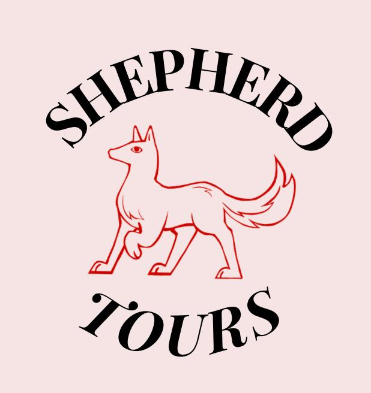

Welcome to

est. 2026
Click here to
2 hour walking tour, 199€ flat per tour + 10€ per person
Click here to
info@shepherd-tours.com
Private Tours
As of 2026, we offer private tours to individuals and groups.
What do you get from a tour at Shepherd's?
- Max. ~10 people per guide
- Storyteller experience, theatrical flair, personalised information and experience.
- Tours with Dual citizen guides who are multi lingual and multi talented.
- Elite service. From planning to dress, everything and everyone is neat and well executed.
- Pick up and drop off from the location (standard or personal request) on foot or by public transport.
- printed list of further recommendations for the rest of your time in The Hague.
- Follow up thank you email with a picture for memories!
Our guides have been trusted by:
- Totally Tailored
- Enter the Hague
- Ga Den Haag
- Viking Cruises
- Atlas Workshops
- The New Farm
- Get Your Guide
- The tourist the hague
FAQs
What Should I bring?
A good pair of walking shoes is recommended, and water if you feel that you will need it.
How far are the tours?
The tours are about 5km long.
What if it rains?
You can cancel for a full refund 48 hours before the tour. If you cancel after 48 hours, per person cost will be returned but not the flat fee. If it is raining when the tour is planned, the tour will still go ahead - there is no bad weather, only bad clothes! If the weather is unbearable, we will contact you to discuss alternatives
Wheelchair/Mobility accessibility?
Yes it is possible, let us know in the booking information and we will contact further to make sure it is accessible
Dress code?
Guests have no dress code! Your guides will be smartly dressed.